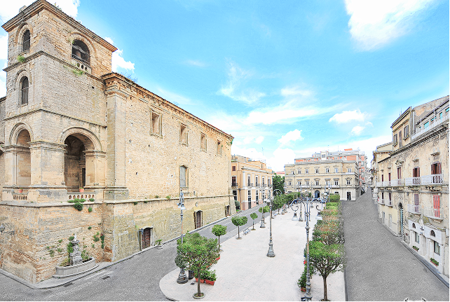
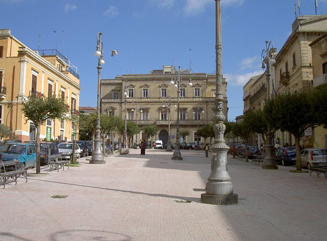
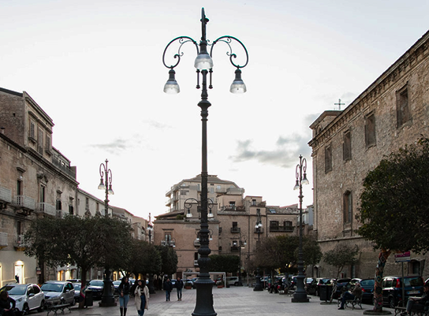
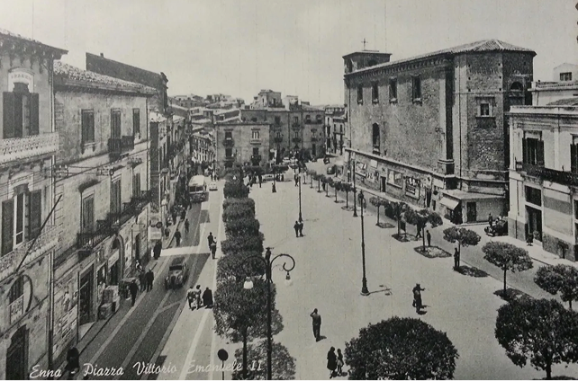

Il cuore storico e religioso di Enna
Piazza Vittorio Emanuele è una delle piazze più importanti e rappresentative della città di Enna. Situata nel cuore del centro storico, questa piazza ampia e panoramica rappresenta un luogo di incontro fondamentale per cittadini e visitatori. Qui si intrecciano storia, cultura e vita quotidiana, in uno spazio che riflette pienamente l’identità e la tradizione della città ennese. Passeggiare nella piazza significa immergersi nell’atmosfera unica di Enna, città posta nel cuore della Sicilia e conosciuta per i suoi paesaggi suggestivi e per il suo ricco patrimonio storico.
La piazza è circondata da eleganti edifici storici che raccontano secoli di storia e di vita cittadina. I palazzi che si affacciano su questo spazio urbano mostrano facciate sobrie ma ricche di dettagli architettonici, balconi in ferro battuto e decorazioni che testimoniano l’evoluzione stilistica della città nel corso del tempo. Tra questi edifici si distingue il maestoso Duomo di Enna, dedicato a Maria Santissima della Visitazione, uno dei monumenti religiosi più importanti della città.


Un luogo di vita e di tradizioni
La cattedrale domina la zona con la sua presenza imponente e rappresenta un simbolo spirituale e culturale per tutta la comunità. Passeggiando lungo i lati della piazza si possono osservare scorci suggestivi, dettagli architettonici e spazi che raccontano la vita quotidiana della città. Le pietre delle pavimentazioni, i lampioni storici e le facciate degli edifici contribuiscono a creare un ambiente ricco di fascino e di memoria. Ogni angolo della piazza offre un punto di vista diverso sulla città e sul paesaggio circostante, regalando ai visitatori un’esperienza visiva e culturale molto intensa.
Durante l’anno, Piazza Vittorio Emanuele diventa anche il centro delle principali manifestazioni cittadine. In occasione di festività religiose, eventi culturali e celebrazioni pubbliche, la piazza si anima con processioni, spettacoli e incontri che coinvolgono tutta la comunità. Tra i momenti più sentiti vi sono le celebrazioni dedicate alla patrona della città, Maria Santissima della Visitazione, che attirano numerosi fedeli e visitatori da tutta la Sicilia.
